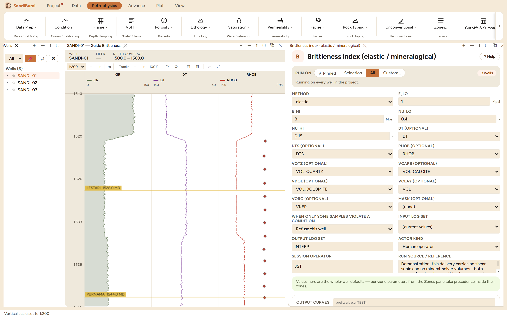

Brittleness index, 0 ductile to 1 brittle, two ways. Elastic: dynamic Young's modulus and Poisson's ratio from the sonic pair and density, normalized and averaged per Rickman. Mineralogical: from a mineral solve's volume fractions.
G = ρ·Vs²; K = ρ·(Vp² − 4/3·Vs²); ν = (3K − 2G)/(2(3K + G)); E = 9KG/(3K + G) Rickman: BI = (E_norm + ν_norm)/2, E over E_LO..E_HI (Mpsi), ν over NU_LO..NU_HI Jarvie: BI = Qz/(Qz + carbonate + clay) Wang-Gale: BI = (Qz + Dol)/(Qz + Dol + calcite + clay + organic)
The shipped normalization endpoints (1-8 Mpsi, 0.40-0.15) are Rickman's own Barnett calibration on dynamic log values: recalibrate per basin, and apply any static correction after this index, not before. Mineral volumes come from a SandiMin run; a missing mineral counts as absent.
Brittleness index, 0 ductile to 1 brittle, two ways. Elastic: dynamic Young's modulus and Poisson's ratio from the sonic pair and density, each normalized and averaged per Rickman. Mineralogical: Jarvie's quartz-over-total or Wang-Gale's quartz-plus-dolomite variant, consuming a SandiMin run's volume fractions.
Both routes were run, and both report 0 clean · 3 failed, correctly. The elastic route needs a shear sonic, and this delivery carries none: no sample can produce a modulus, so the run reports failure rather than versioning an all-missing interpretation (the same answered contract every module follows). The mineral routes need a SandiMin volume solve, which this project has not run. A failed run that says why beats a zero that computes.

Everything below is generated from the same manifest the application builds this module’s pane from — descriptions, defaults, sources, ranges and pre-run checks here are exactly what the running application enforces.
Brittleness index (0 ductile .. 1 brittle) two ways. METHOD=elastic: dynamic Young's modulus and Poisson's ratio from DT, DTS, RHOB (G=ρ·Vs², K=ρ·(Vp²−4/3·Vs²), ν=(3K−2G)/(2(3K+G)), E=9KG/(3K+G), with Vp,Vs in km/s = 304.8/slowness, moduli in GPa, E→Mpsi), then Rickman et al. 2008 BI=(E_norm+ν_norm)/2 with E normalized over E_LO..E_HI Mpsi and ν over NU_LO..NU_HI (Barnett defaults 1..8 and 0.4..0.15 — recalibrate per basin). METHOD=mineral_jarvie: Jarvie 2007 BI=Qz/(Qz+carbonate+clay). METHOD=mineral_wanggale: Wang & Gale 2009 BI=(Qz+Dol)/(Qz+Dol+calcite+clay+organic) — dolomite counts brittle. Mineral volumes come from a SandiMin run (VOL_*); a missing mineral is treated as absent. Elastic E,ν are DYNAMIC (apply a static correlation before geomechanics). Cite: Rickman et al. 2008 (SPE 115258); Jarvie et al. 2007; Wang & Gale 2009. See docs/ref_unconventional.md §4.
| Role | Description | Resolves to | Required | Notes |
|---|---|---|---|---|
| DT | Compressional Δt (elastic) | DT | no | — |
| DTS | Shear Δt (elastic) | DTS | no | — |
| RHOB | Bulk density (elastic) | RHOB | no | — |
| VQTZ | Quartz volume (mineral) | VOL_QUARTZ | no | — |
| VCARB | Calcite volume (mineral) | VOL_CALCITE | no | — |
| VDOL | Dolomite volume (mineral) | VOL_DOLOMITE | no | — |
| VCLAY | Clay volume (mineral) | VCL | no | accepts quantity kind: VCL |
| VORG | Organic / kerogen volume (Wang-Gale) | VKER | no | — |
Whole-well defaults; per-zone values from the Zones pane take precedence inside their zones (except where a parameter is marked one-value-per-well).
Young's modulus at BI=0 (ductile)
Young's modulus at BI=1 (brittle)
Poisson's ratio at BI=0 (ductile)
Poisson's ratio at BI=1 (brittle)
Brittleness basis
elasticmineral_jarviemineral_wanggaleelastic| Name | Description |
|---|---|
| BI | Brittleness index (0 ductile .. 1 brittle) |
| YME | Dynamic Young's modulus (elastic) |
| PR | Dynamic Poisson's ratio (elastic) |